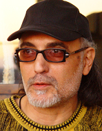

Мы все должны осознать,
что рано или поздно
настанет время компромиссов.
Легче уступать другу
или партнеру, а не врагу.

Ваграм Мартиросян
Армения
Родился 27 июля 1959, г. Гюмри, Армения.
1976-1981- Ереванский Государственный университет; факультет филологии; журналист, 1981-1984- аспирантура ЕГУ, 1986/1991- кандидатская диссертация, кафедра филологии ЕГУ.
1981-1982 - литсотрудник Ереванского драматического театра, 1983-1986 - литературный консультант Союза писателей Армении, 1986-1990- заведующий отделом литературных переводов газеты ”Гракан терт”, 1990-1993 заместитель главного редактора газеты ”Айк”, 1993-1995 заместитель председателя Национального телевидения и радио Армении, 1996-2000 вице-президент телекомпании ”АР", автор и ведущий ток-шоу “Траектория” и ”Летоисчисление”, 2002–2003– Профессор, Сравнительная литертурная критика, Ереванского института лингвистики, 2004– автор и ведущий ток-шоу “Революция”, ТВ “Кентрон”, c 2000- по сей день со-редактор литературного журнала “Бнагир”.
Премии/Награды:1991 - Специальная премия культурного фонда Текеян за пьесу ”Задача требует решения”, 2005- Приз в номинация “Лучшая телевизионная программа” за передачу “Армяно-турецкий диалог”, 2005 Первый приз за сценарий “Армения 2020”.
Публикации на армянском: ”Сентиментальный бортовой журнал”, cтихотворения, 1988. ”Склоненные над столами”, стихотворения, 1996. ”Оползень”, роман, 2000. "Замаскированные во имя креста”, роман, 2002. “Европейская история”, повесть, 2003. “Побег с земли обетованной”, повесть, 2004. “Совы”, 4 повести, 2005.
Публикации на русском: ”Оползни”, журнал “Дружба народов”, 2005, N 2.
Публикации на венгерском: Foldcsuszamlas (Оползни). Novel. “Nagy Vilag” magazine, #8, 2003. Стихотворения. “Lettre Internationale,” # 26.1997.
Публикации на английском: Landslide. Bookartist Emily Artinians edition. 2005.
Автор множества статей, а также переводов с венгерского, французского и русского языков. Член международного совета портала Американской библиотеки www.muse-apprentice-guild.com и со-редактор армянских выпусков. Член Совета Кавказского Центра Миротворческих Инициатив.
1976-1981- Ереванский Государственный университет; факультет филологии; журналист, 1981-1984- аспирантура ЕГУ, 1986/1991- кандидатская диссертация, кафедра филологии ЕГУ.
1981-1982 - литсотрудник Ереванского драматического театра, 1983-1986 - литературный консультант Союза писателей Армении, 1986-1990- заведующий отделом литературных переводов газеты ”Гракан терт”, 1990-1993 заместитель главного редактора газеты ”Айк”, 1993-1995 заместитель председателя Национального телевидения и радио Армении, 1996-2000 вице-президент телекомпании ”АР", автор и ведущий ток-шоу “Траектория” и ”Летоисчисление”, 2002–2003– Профессор, Сравнительная литертурная критика, Ереванского института лингвистики, 2004– автор и ведущий ток-шоу “Революция”, ТВ “Кентрон”, c 2000- по сей день со-редактор литературного журнала “Бнагир”.
Премии/Награды:1991 - Специальная премия культурного фонда Текеян за пьесу ”Задача требует решения”, 2005- Приз в номинация “Лучшая телевизионная программа” за передачу “Армяно-турецкий диалог”, 2005 Первый приз за сценарий “Армения 2020”.
Публикации на армянском: ”Сентиментальный бортовой журнал”, cтихотворения, 1988. ”Склоненные над столами”, стихотворения, 1996. ”Оползень”, роман, 2000. "Замаскированные во имя креста”, роман, 2002. “Европейская история”, повесть, 2003. “Побег с земли обетованной”, повесть, 2004. “Совы”, 4 повести, 2005.
Публикации на русском: ”Оползни”, журнал “Дружба народов”, 2005, N 2.
Публикации на венгерском: Foldcsuszamlas (Оползни). Novel. “Nagy Vilag” magazine, #8, 2003. Стихотворения. “Lettre Internationale,” # 26.1997.
Публикации на английском: Landslide. Bookartist Emily Artinians edition. 2005.
Автор множества статей, а также переводов с венгерского, французского и русского языков. Член международного совета портала Американской библиотеки www.muse-apprentice-guild.com и со-редактор армянских выпусков. Член Совета Кавказского Центра Миротворческих Инициатив.